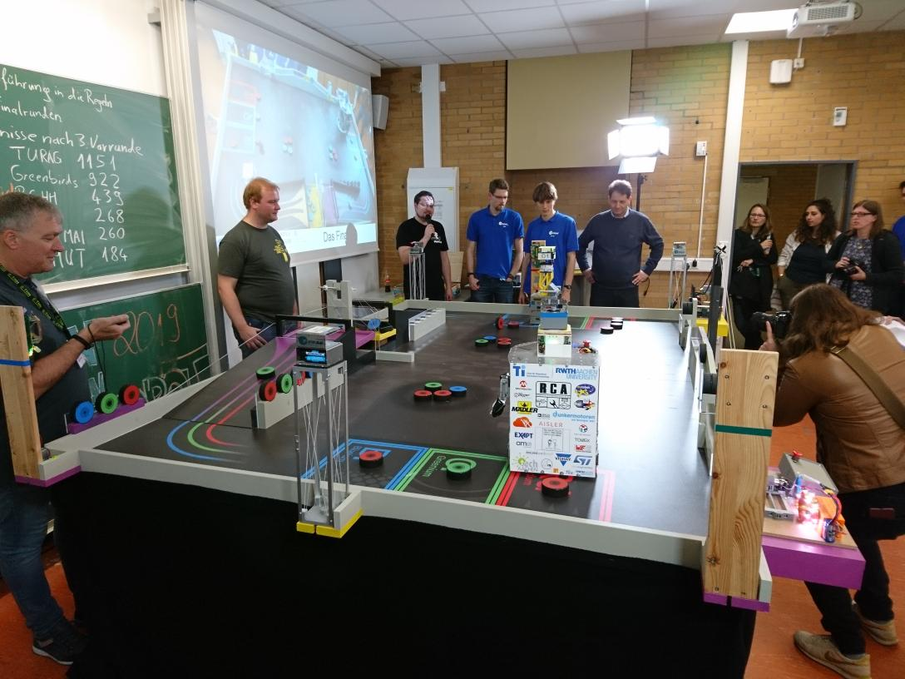
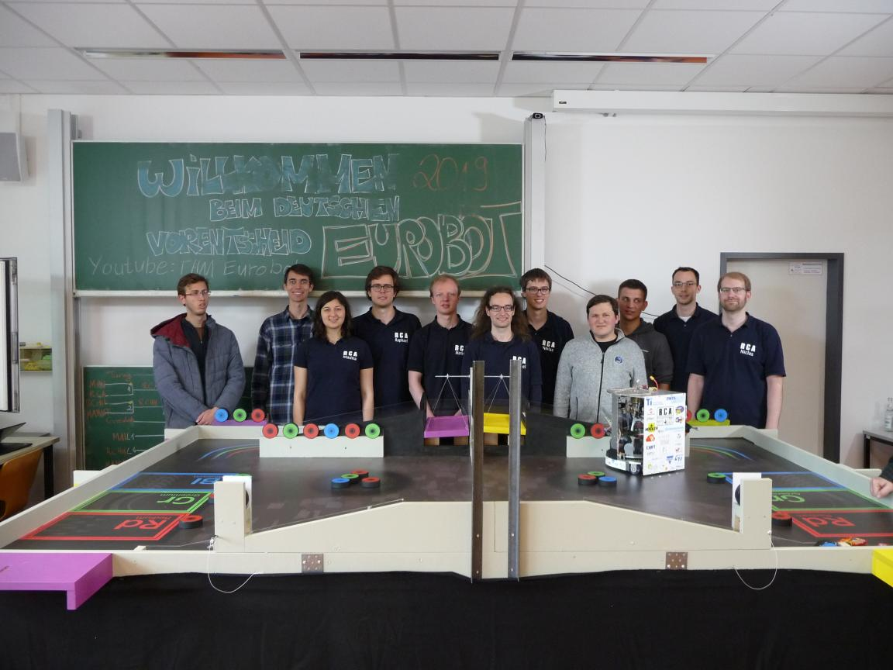
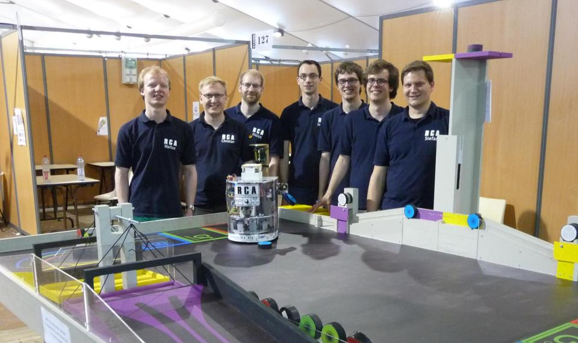

This year’s topic in the Eurobot, organized by Planete Sciences from France, was Atom Factory. In short, it was about manipulating ice hockypuks, the so-called atoms. The tasks ranged from simply moving the atoms to grabbing, weighing and sorting them.

The preparations started in October 2018, with the publication of the new rules. This years Season was mainly characterized by electrical engineering and software. Due to a stronger generation change within our team, there was an enormous loss of knowledge about the technology of the previous years. In order to become competitive again, new members were acquired and trained. The resulting projects were then to flow into this year’s robot. Together for example a new motor driver, our so-called Alphamotor, was developed, optimized and used. The hurdles to be taken here were often not possible without hours of troubleshooting and improvements, which, however, had to be followed by a deeper examination of the matter. Furthermore, a completely newly developed positioning system based on ultrasound was used for the first time. This was developed together with a former member of the club and then integrated into our hardware abstraction and communication framework. Meanwhile some of our robots software structure got a bigger rework, which seems to be not done yet
But a lot has also changed mechanically in this season. Thus a complex cartesian working gripper mechanism was designed and built, which can move to all positions necessary for the game with only one arm. The well-proven drive concept was also replaced by an Omiwheel drivetrain for technical and practical reasons. This makes it possible to drive in any direction without changing the alignment of the robot. The necessary mathematical transformations as well as the implementation of these were also done in a very short time. The result at the time of the competitions was a completely new construction, build by members, who compensated the loss of knowledge driven by outgoing members with the learning process during the season. So the club is competitive again.

In the now following competitions we first went to Gießen from 02.05 to 04.05 this year, where the German preliminary decision for the international competition took place. There, a total of 7 teams from all over Germany competed to reach the first to third place, for which the international competition will continue. Fortunately our robot homologated and was ready for the competition. Many sleepless nights and smoking heads should pay off, so our Team took the 2nd place behind TURAG from Dresden. Thirdly, the Greenbirds team from Ludwigshafen managed to qualify for the international competition. At the end of May we went from 29.05. to 01.06. to La Roche-Sur-Yon in France. There the national and international competition with nearly 300 French teams took place. The again best 3 teams from France were then also qualified for the international competition. A total of 33 teams competed in the international competition. It started with five preliminary rounds in which the aim was to collect the most points. The best 8 teams from these preliminary rounds were then ready to enter the final. Unfortunately, we had big problems with our new positioning system to reach defined points and even night-long improvements helped only little to change anything about it. Therefore it was only enough for us to finish as 29th Team this year. The Eurobot was won by Team Reset from Russia. Despite the sobering result, the members are proud of what they achieved in the short time and motivated to give everything to win the Eurobot in the upcoming season.
